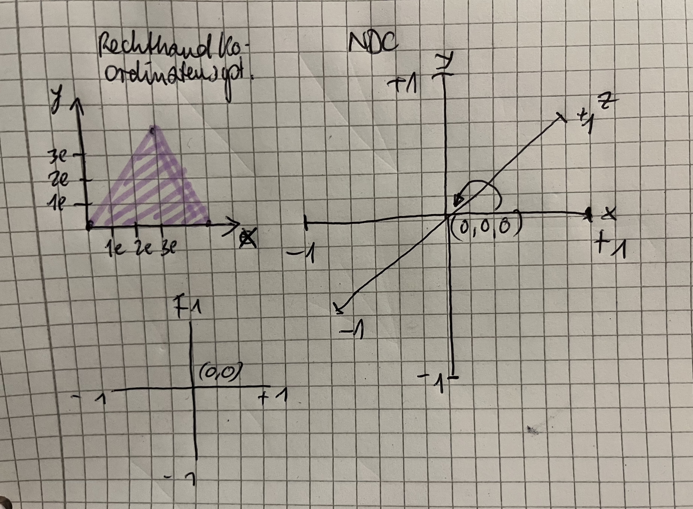
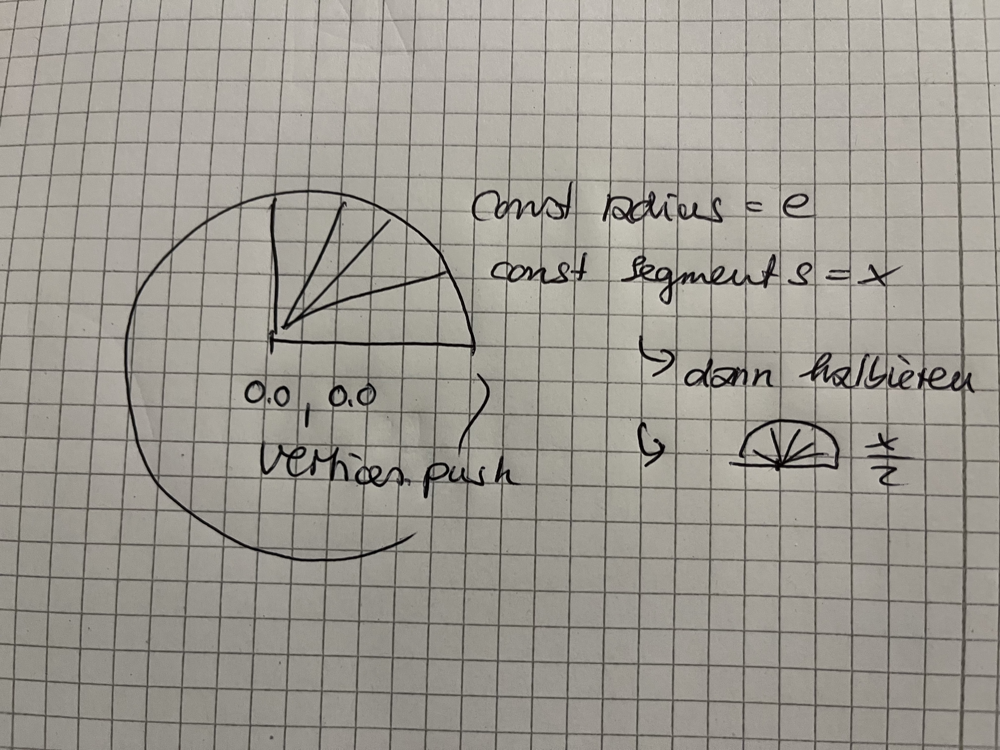

Der Code verbindet die beiden vorherigen Schritte (s.u.). Um diese runde Form hinzubekommen, werden 29 Dreiecke wie Kuchenstücke nebeneinandergereiht und eingefärbt. Wenn man die Tortenstücke gedanklich gegen unendlich laufen lässt – oder wahrscheinlich schon viel früher –, bekommt man theoretisch den perfekten Kreisbogen. Für meine Grafikf nutze ich diese Aufteilung: Der Ursprung bzw. die Mitte von meinem Fächer liegt ganz unten auf dem Boden der Canvas. Die Spitze zeigt exakt nach oben entlang der positiven Y-Achse, was einem Winkel von 270 Grad bzw. 1,5 mal Pi entspricht. Damit die obere Kante auch wirklich rund wird, macht der Code Schritt für Schritt von links nach rechts über die Mathe-Befehle Math.cos (für die X-Verschiebung nach rechts und links). für den Y-Weg nach oben kommt Math.sin auf dieser Kreisbahn. Weil ich das im Code insgesamt 29-mal wiederhole, sieht das eigentlich eckige Dreieck plötzlich aus wie ein runder Halbkreis. Das Ganze färbe ich dann noch abwechselnd in Schwarz und Orange ein, damit man die einzelnen Segmente richtig gut auseinanderhalten kann.

Um den Fächer zu erstellen habe ich die Übungen aus dem Skript mehr oder weniger gemacht Eine runde Form als Ausgangsform in 29 Segmente unterteilt.

KREIS-GEOMETRIE BERECHNEN const segments = 64; const radius = 0.6; const vertices = []; vertices.push(0.0, 0.0); // Punkt 0: Das Zentrum des Kreises for (let i = 0; i <= segments; i++) { // Winkel für das aktuelle Kreissegment (in Radiant) const angle = (i / segments) * 2 * Math.PI; const x = Math.cos(angle) * radius; const y = Math.sin(angle) * radius; vertices.push(x, y); } Ich habe den Code mit Copilot erstellt und in Schleifen modifiziert und getestet.